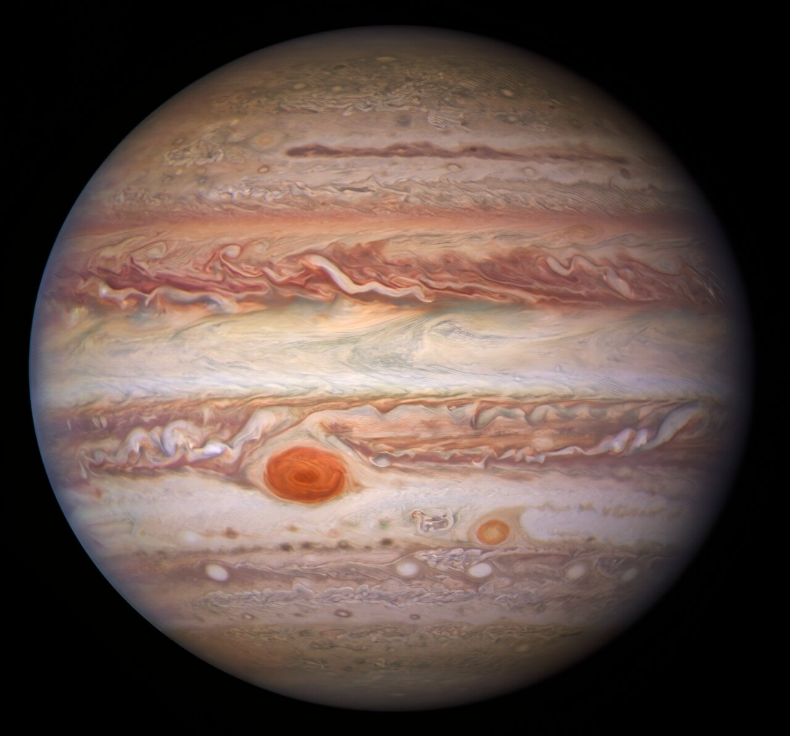
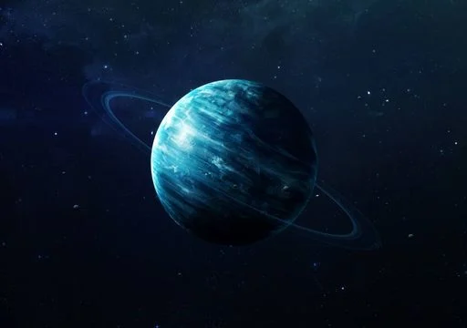
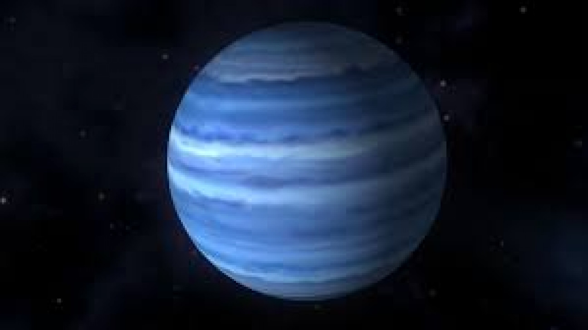

E.E.S.T. N° 3
Orientación en Informática
Les damos la bienvenida a nuestra plataforma web interactiva sobre los gigantes del Sistema Solar. Este espacio fue desarrollado como un proyecto pedagógico integral, combinando el desarrollo web con la divulgación científica.
A través de esta plataforma, podrán explorar en profundidad las propiedades físicas, dinámicas atmosféricas y descubrimientos más recientes sobre Júpiter, Saturno, Urano y Neptuno.
👉 Seleccionen cualquiera de los planetas en el menú superior para comenzar la exploración o visiten la sección Acerca del proyecto para conocer todo el proceso de desarrollo.
🟠 Júpiter: El Rey de los Planetas

Júpiter posee una masa dos veces y media mayor que la de todos los demás planetas del Sistema Solar juntos. Su tremenda fuerza de gravedad funciona como un auténtico «escudo protector» para la Tierra, ya que atrae o desvía asteroides y cometas potencialmente peligrosos.
En su atmósfera turbulenta se desata la Gran Mancha Roja, un anticiclón colosal donde cabría la Tierra entera. Además, genera el campo magnético planetario más intenso de todo el sistema.
🔍 Ficha Técnica de Júpiter
- Composición atmosférica: 90% hidrógeno, 10% helio y trazas de metano y amoníaco.
- Diámetro ecuatorial: 142.984 km (11 veces el tamaño de la Tierra).
- Mundo de lunas (95 confirmadas): Posee a Ganímedes (la luna más grande del Sistema Solar) y a Europa (con un océano subterráneo líquido).
- Velocidad de rotación: Gira sobre sí mismo en apenas 9 horas y 56 minutos.
- Misiones destacadas: Voyager 1 y 2, sonda Galileo y sonda Juno.
🪐 Saturno: La Joya Anillada

Saturno es famoso por su complejo sistema de anillos, que se extiende hasta 282.000 kilómetros desde el planeta, aunque su espesor suele ser de tan solo unos 10 metros. Está compuesto por miles de millones de partículas de hielo de agua pura.
Es el único planeta del Sistema Solar cuya densidad media es menor que la del agua: si existiera una bañera cósmica gigante, ¡Saturno flotaría!
🔍 Ficha Técnica de Saturno
- Vientos huracanados: En su ecuador los vientos alcanzan hasta 1.800 km/h.
- El misterioso hexágono: En su polo norte existe una formación de nubes estable con geometría de seis lados.
- Lunas destacadas: Cuenta con 146 lunas registradas. Titán tiene lagos de metano y Encélado géiseres de a6gua.
- Distancia al Sol: Alrededor de 1.434 millones de kilómetros.
- Misión célebre: Misión Cassini-Huygens (1997-2017).
🔵 Urano: El Coloso Inclinado

Urano es un gigante de hielo: gran parte de su masa consiste en un fluido denso y caliente de agua, amoníaco y metano sobre un núcleo rocoso.
Su rasgo más asombroso es su inclinación axial de 98 grados. Rueda sobre su órbita casi de costado, lo que causa estaciones extremas donde cada polo pasa 42 años de día continuo seguidos de 42 años de noche polar.
🔍 Ficha Técnica de Urano
- Temperatura extrema: Posee la atmósfera más fría registrada en el Sistema Solar (-224 °C).
- Color característico: El gas metano atmosférico absorbe el rojo y dispersa la luz azul-verdosa.
- Anillos tenues: Cuenta con 13 anillos estrechos y muy oscuros.
- Lunas literarias: Sus 28 lunas llevan nombres de personajes creados por William Shakespeare y Alexander Pope.
- Exploración: Sonda espacial Voyager 2 en 1986.
🔵 Neptuno: El Mundo del Viento Eterno

Neptuno es el planeta más remoto del Sistema Solar. Tarda casi 165 años terrestres en completar una sola vuelta al Sol y soporta vientos huracanados que superan los 2.100 km/h, los más veloces registrados en el vecindario cósmico.
🔍 Ficha Técnica de Neptuno
- Descubrimiento matemático: Predicho por cálculos matemáticos antes de su confirmación visual en 1846.
- Misterio térmico: Emite 2,6 veces más calor interno del que recibe del distante Sol.
- Tritón: Su luna más grande, con géiseres de nitrógeno líquido y órbita retrógrada.
- Anillos: Posee 5 anillos oscuros con agrupaciones densas de partículas llamadas arcos.
📊 Tabla Comparativa de Parámetros
| Planeta | Tipo | Masa (Tierra = 1) | Período Orbital | Lunas Confirmadas |
|---|---|---|---|---|
|
Júpiter
|
Gigante gaseoso | 318 | 11,9 años | 95 |
|
Saturno
|
Gigante gaseoso | 95 | 29,5 años | 146 |
|
Urano
|
Gigante de hielo | 14,5 | 84,0 años | 28 |
|
Neptuno
|
Gigante de hielo | 17,1 | 164,8 años | 16 |
🛠️ Proyecto Institucional
Como alumnos de 7mo 3era en Informática de la E.E.S.T. N° 3, llevamos a cabo este proyecto integrando desarrollo web, programación móvil orientada a eventos y control de hardware mediante Arduino.
1. Plataforma Web y Juego Interactivo
Diseñamos y estructuramos una arquitectura web optimizada en HTML y CSS . Aplicamos conceptos avanzados de pseudo-clases como :target para conseguir una navegación modular por pestañas sin sobrecargar el navegador con librerías externas. Además, incorporamos el módulo interactivo de juego accesible mediante el botón de la barra de navegación.
2. Aplicación Móvil: "Control de Luces Planetas Bluetooth" (MIT App Inventor)
Desarrollamos una aplicación Android diseñada específicamente para interactuar de forma inalámbrica con la maqueta y simulación de los planetas gigantes
3. Integración con ArduinoS
Enlazamos la aplicación de App Inventor con una placa Arduino mediante un módulo Bluetooth serial. Al pulsar cada botón en la pantalla táctil del smartphone, la aplicación envía un carácter o código identificador por Bluetooth:
- Arduino procesa los datos en tiempo real mediante su puerto serie (pines RX/TX).
- A través de salidas digitales y modulación PWM, conmuta transistores o diodos LED para iluminar selectivamente los módulos físicos representativos de cada planeta.
- Esto permite una experiencia interactiva multisensorial: leer los datos científicos en la web, responder el cuestionario en el juego y controlar la maqueta en vivo desde el celular.